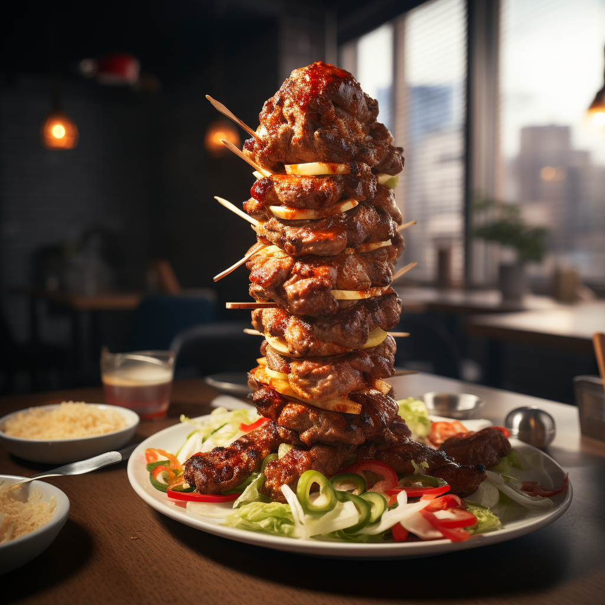

Entrées

Noeuguettes de Saint-Jacques
Noeuguettes de Saint-Jacques : Coquilles Saint-Jacques délicatement hachées, enrobées d'une
fine
panure de panko et de
zestes de citron, servies avec une émulsion de coriandre et une pointe de piment doux.
Velouté de potimarron en shooter
Velouté de potimarron en shooter : Soupe onctueuse parfumée au gingembre, accompagnée de
mini
croûtons dorés au
beurre.
Taquausse de magret de canard
Taquausse de magret de canard : Tranches de magret de canard fumé, salade roquette, compotée
d'oignons rouges et
fromage de chèvre dans un wrap moelleux et croustillant.
Plats
Burjé élégance
Burjé élégance avec ses frites de Patate Douce au Parmesan : Buns briochés maison, steak de
bœuf
Wagyu, assaisonné avec
des câpres, des échalotes françaises, du persil frais et une pointe de moutarde à
l'ancienne.
Frites saupoudrées de
parmesan fraîchement râpé et de persil haché. Accompagnées d'un aioli à la
truffe et d'une gelée de piment doux.

Kebab de Filet Mignon
Kebab de Filet Mignon : Filet mignon de porc mariné dans des épices douces, grillé à la
perfection, servi dans un pain maison avec une salade de chou à la crème fraîche et à
l'aneth,
et une touche de sauce tzatziki.
Pizza au caviar
Pizza au caviar : Base crémeuse à la crème fraîche, oignons nouveaux, saumon fumé, et une
généreuse portion de
caviar. Finie avec un filet de citron et d'aneth.
Desserts
Churros au chocolat noir et fleur de sel
Churros au chocolat noir et fleur de sel : Churros croustillants saupoudrés de sucre, servis
avec une sauce au
chocolat noir corsé et une pincée de fleur de sel.
Sundae de macaron
Sundae de macaron : Glace vanille, éclats de macarons colorés, sauce caramel beurre salé et
éclats de pralin.
Tarte au Daim revisité
Tarte au Daim revisité : Base sablée croquante, une couche crémeuse de caramel au beurre
salé,
morceaux de Daim
concassés, surmontée d'une mousse légère au chocolat et de copeaux de Daim croustillants.
Vins
Pétillant de Betterave
Pétillant de Betterave : Un vin effervescent d'une teinte rosée profonde, élaboré à partir
de
betteraves
fermentées, offrant des notes terreuses sucrées, idéal pour les entrées audacieuses.
Rouge Sang de Dragon
Rouge Sang de Dragon : Un vin rouge obtenu à partir de raisins cultivés dans des sols
volcaniques, possédant une
teinte presque noire et des arômes fumés avec une touche minérale, parfait pour accompagner
des
plats robustes.
Jaune Curcuma & Gingembre
Jaune Curcuma & Gingembre : Un vin blanc infusé avec du curcuma et du gingembre, lui donnant
une
couleur dorée et
des saveurs épicées et rafraîchissantes. Idéal pour accompagner des plats exotiques ou
épicés.